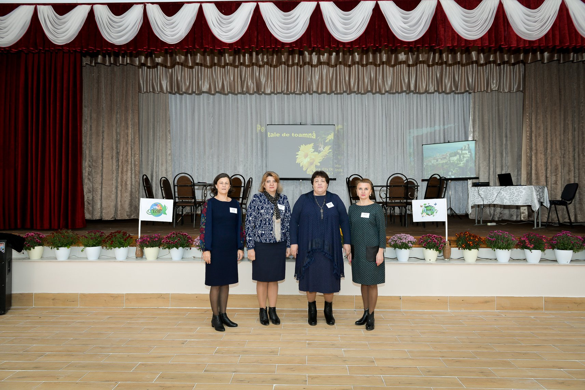
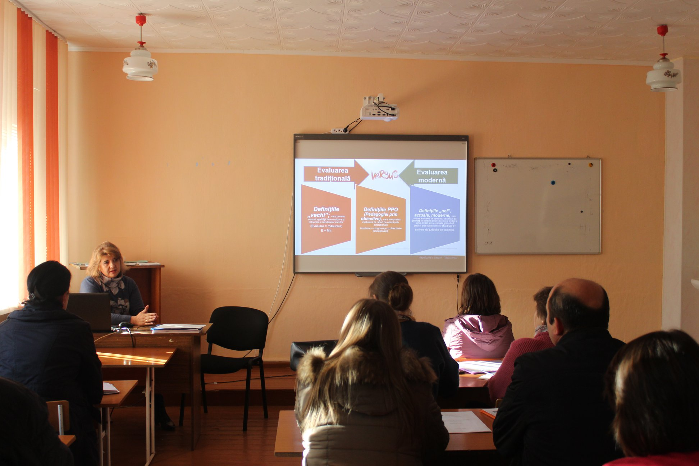
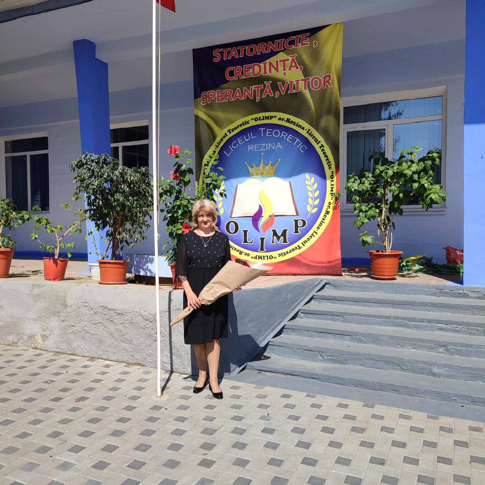

Lilia Chirtoacă
|
Director adjunct instruire, profesor de informatică și educația tehnologică
Româna, Engleza, Rusa chirtoacal55@gmail.com +373 69673424 |
Sunt o profesoară care a absolvit Universitatea ''Aleco Russo'' din orașul Bălți în anul 1991, facultatea - disciplini tehnice. În anul 2004 - recalificare la informatică, din anul 2015 director al IPLT A.S.Pușkin și din anul 2016 prin fuzionare sa format IPLT "Olimp" unde activez director adjunct instruire. Cunosc la nivel avansat Microsoft Ofis, baze de date și careva algoritmi. Nivel mediu - limbajele de programare Pascal, C++, JavaScript, |

|
 |  |  |
Experiența de lucru
Director IPLT "A.S.Pușkin"
martie 2015 - august 2016
Director adjunct istruire
septembrie 2016 - PrezentActivez ca director adjunct instruire.
Profesor de educația tehnologică și informatică
august - 1992 - educația tehnologică și 2003 - informatica
Educație
Studii universitare
Septembrie 1986 - mai 1991gradul unu didactic la educația tehnologică
Recalificare
recalificare la informatică - 2003gradul doi didactic la informatică